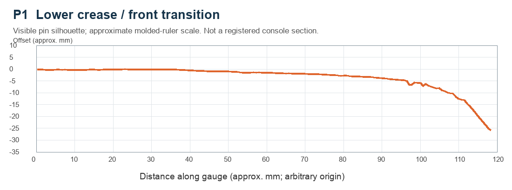
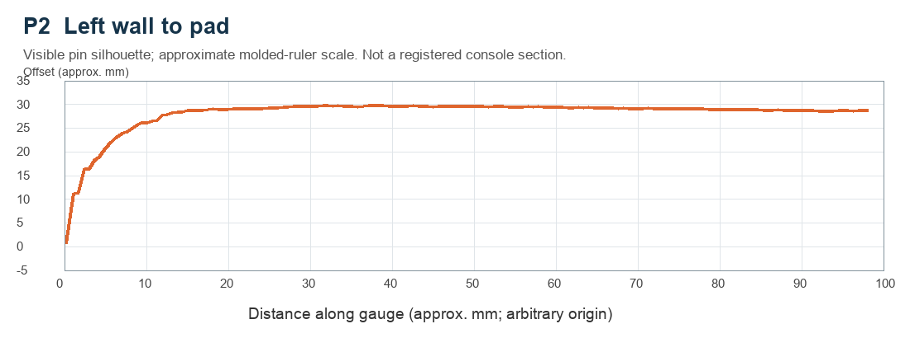
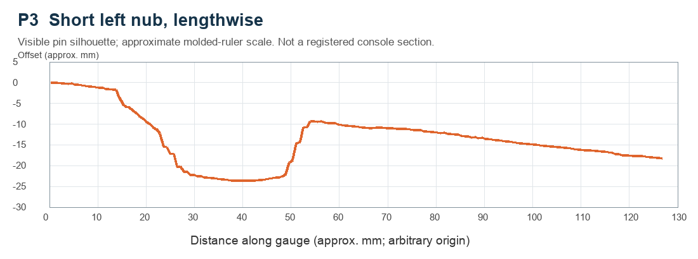
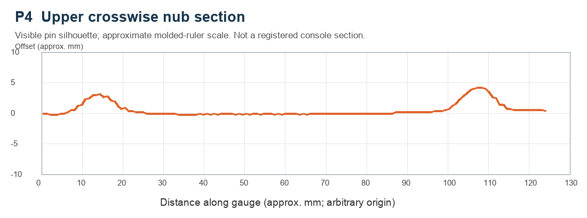
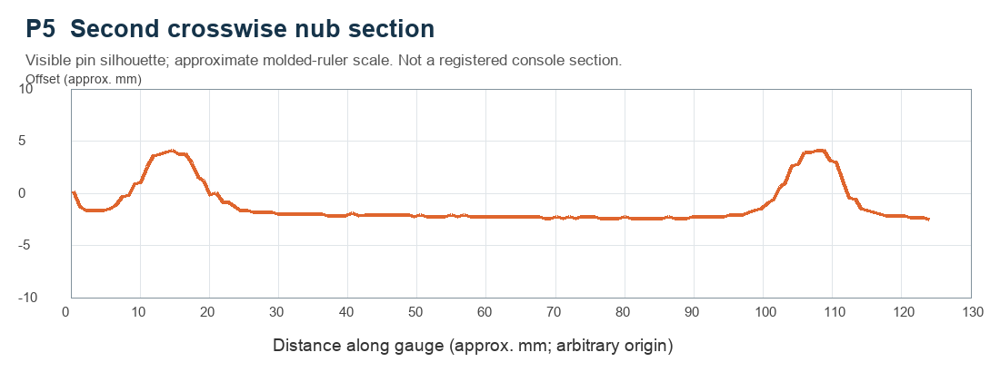
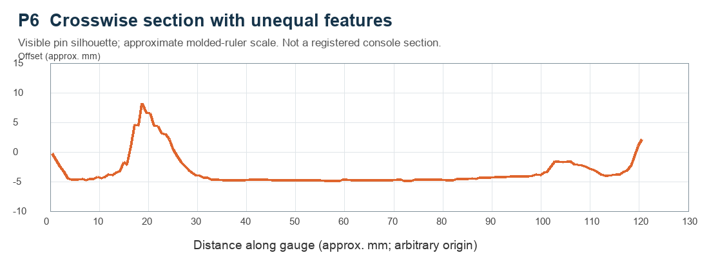
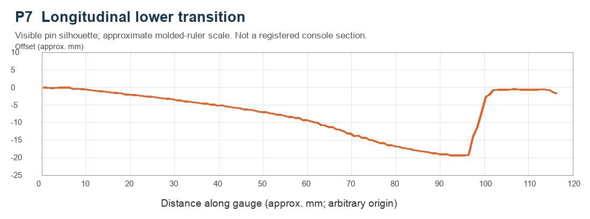
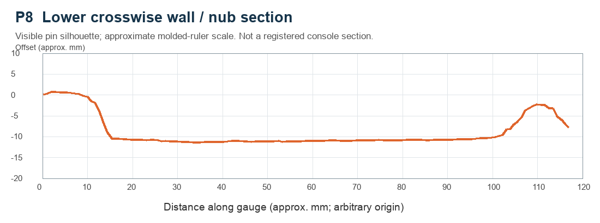
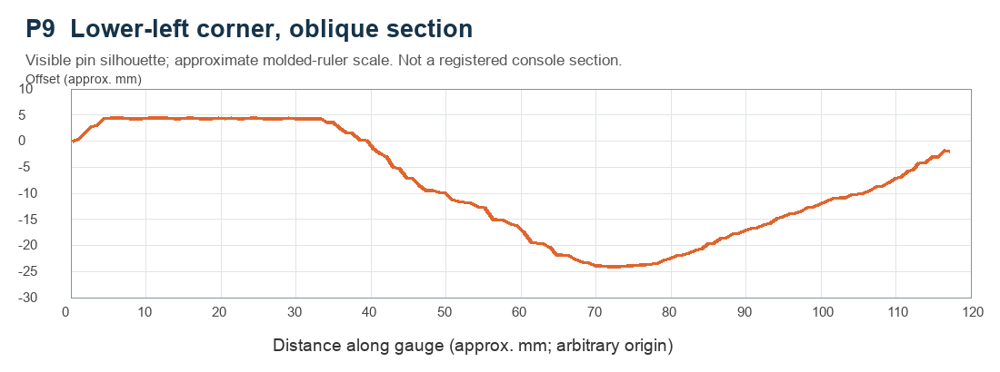

3 November 2026 · 18 original photos · 9 matched pairs · V5 geometry unchanged
The user has confirmed that the paper's horizontal 100 mm bar measures 100 mm. These captures are useful contour evidence, but the raised gauge and curved sheet still prevent a direct pixel-to-CAD conversion. In IMG_0170, 100 mm on the molded ruler spans approximately 570 pixels; 100 mm on the paper spans approximately 512 pixels (about 11% difference). The two surfaces cannot share one image scale. The vertical print scale has not been independently checked.
Orange plots below preserve the visible pin silhouettes, using the gauge's molded centimetre ticks for a provisional scale. They are not corrected for out-of-plane tilt or pin height, and their origins are arbitrary. The plot axes are not console X/Y/Z. Negative values are relative image offsets, not material depths. No fit tolerance or radius is inferred from these plots.
What these photos add: a left-wall blend, longitudinal bottom transition, short-nub end profile, several transverse nub profiles, and an oblique corner section. These are suitable for tracing and choosing more realistic curve shapes.
What remains unmeasured: exact section stations, contact plane and angle, repeatability, and plan-view end/corner outlines at specified heights. The photos do not yet verify 13.5 mm underside or 5.6 mm upper opening widths against the physical nubs. Those remain design targets.
Preserve the 2 mm left-edge inset, phone dimensions, camera opening, thickness limits and crease seating requirements. A future CAD revision should register these sections first, then interpolate with uncertainty; it should not overwrite known positions using unregistered image coordinates.
Provisional numerical checks
These values use the molded gauge scale and a straight baseline fitted between the nubs. They are image-plane estimates, rounded to 0.5 mm for reporting; that rounding is not an accuracy claim. Unknown tilt and pin contact geometry remain. Paper coordinates are never used as console coordinates.
Pair
Peak spacing
Left/right rise
Left/right width at 1 mm rise
Left/right width at 4.4 mm rise
P4
~93 mm
3.5 / 4.0 mm
11.0 / 13.0 mm
— / — mm
P5
~94 mm
6.0 / 6.5 mm
16.0 / 14.5 mm
6.5 / 7.0 mm
The approximately 93–94 mm peak spacing is consistent with the current 93 mm nub center spacing, but does not independently locate the base centerlines. P5's widths suggest that the current opening targets need a fit check; they do not justify changing them without registering the section. The 4.4 mm diagnostic is a horizontal slice, not the insert's sloped upper rim. A dash means that section's apparent peak did not reach that height.
P1 · Lower crease / front transition
Likely longitudinal section through the lower transition. Exact X station and contact plane are unrecorded.
Position · IMG_0162.jpegShape · IMG_0163.jpeg

Use: Lower console-side relief and phone seating transition; does not alone establish an XY corner radius.
Limit: The sheet is visibly curved. The curved endpoint reaches the lowest pins, so the complete transition may not be captured.
P2 · Left wall to pad
Crosswise capture of the left wall/pad transition, apparently in the lower region. Exact Y station is unrecorded.
Position · IMG_0164.jpegShape · IMG_0165.jpeg

Use: Left external edge relief. Preserve the requested 2 mm inset until a console datum is registered.
Limit: A wall blend is visible, but the photo does not establish wall position relative to the nub centerline or the full pad baseline.
P3 · Short left nub, lengthwise
Likely lengthwise section through the short left nub. Its exact lateral alignment and gauge tilt are unrecorded.
Position · IMG_0167.jpegShape · IMG_0168.jpeg

Use: Asymmetric longitudinal end slopes. A vertical section does not specify the rounded XY end outlines at each height.
Limit: The broad upper feature and end transitions need registration to physical nub endpoints before changing opening length.
P4 · Upper crosswise nub section
Crosswise capture across both nubs near their upper ends. Exact Y station is unrecorded.
Position · IMG_0169.jpegShape · IMG_0170.jpeg

Use: Nub flank shape and separation at this station.
Limit: The molded 100 mm ruler span is about 570 image pixels; the paper calibration bar is about 512 pixels. Their scales differ by about 11%.
P5 · Second crosswise nub section
Crosswise capture across both nubs. It appears lower than P4; exact Y and whether this was a repeat are unrecorded.
Position · IMG_0171.jpegShape · IMG_0172.jpeg

Use: Compare nub flanks with P4; do not treat the two as repeatability measurements without station confirmation.
Limit: Both crowns are steeper than P4 in the image. This could reflect station, seating, or tilt as well as true surface variation.
P6 · Crosswise section with unequal features
Crosswise capture at a different height on the pad. The gauge appears reversed in the placement photo relative to the grid photo.
Position · IMG_0173.jpegShape · IMG_0174.jpeg

Use: Local end/side transition evidence. Resolve console left/right before assigning either feature to a nub.
Limit: The far edge is cropped; the near silhouette is extracted. Do not read image-left as console-left.
P7 · Longitudinal lower transition
Lengthwise/oblique capture near the lower pad and long center nub. Exact X station and which surface the pins follow are uncertain.
Position · IMG_0175.jpegShape · IMG_0176.jpeg

Use: Evidence of longitudinal change approaching the crease; identify the abrupt step before modeling it as a real surface.
Limit: The abrupt end step may include a boundary or non-contact pins. It is retained in the raw silhouette but not interpreted as CAD.
P8 · Lower crosswise wall / nub section
Crosswise capture in the lower region: a broad left-side feature and a narrow right-side feature. Exact Y station is unrecorded.
Position · IMG_0177.jpegShape · IMG_0178.jpeg

Use: Left boundary blend and long-nub cross-section near its lower region.
Limit: The left feature reaches the gauge end and is only partially captured; it must not automatically be classified as the short nub.
P9 · Lower-left corner, oblique section
Oblique capture through the lower-left corner. Section angle, contact height, and exact origin are unrecorded.
Position · IMG_0179.jpegShape · IMG_0180.jpeg

Use: Compound corner blend. This is evidence for a smooth transition, not a direct measurement of a plan-view fillet radius.
Limit: A single diagonal section cannot reconstruct the whole 3D corner or prove the current R15 outline.